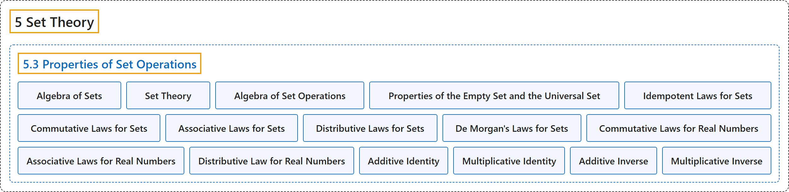

5.3 Properties of Set Operations
Classification

Glossary
| Term | Definition | 中文翻译 | Source |
|---|---|---|---|
| 5 Set Theory 集合论 |
(No definition) | （无定义） | Sundstrom, 2022, chapter 5 |
| 5.3 Properties of Set Operations 集合运算的性质 |
(No definition) | （无定义） | Sundstrom, 2022, section 5.3 |
| Algebra of Sets 集合代数 |
"The primary purpose of this section is to have in one place many of the properties of set operations that we may use in later proofs. These results are part of what is known as the algebra of sets or as set theory." | 本节的主要目的是把以后证明中可能用到的许多集合运算性质集中在一处。这些结果是所谓集合代数或集合论的一部分。 | Sundstrom, 2022, section 5.3 |
| Set Theory 集合论 |
"These results are part of what is known as the algebra of sets or as set theory." | 这些结果是所谓集合代数或集合论的一部分。 | Sundstrom, 2022, section 5.3 |
| Algebra of Set Operations 集合运算代数 |
"Let \(A\text{,}\) \(B\text{,}\) and \(C\) be subsets of some universal set \(U\text{.}\) Then all of the following equalities hold." | 设 \(A\)、\(B\) 和 \(C\) 是某个全集 \(U\) 的子集，那么下列等式都成立。 | Sundstrom, 2022, section 5.3 |
| Properties of the Empty Set and the Universal Set 空集与全集的性质 |
"Properties of the Empty Set and the Universal Set \(\begin{aligned} A \cap \emptyset & = \emptyset & A \cap U & = A\\ A \cup \emptyset & = A & A \cup U & = U \end{aligned}\)" | 空集与全集的性质 \(\begin{aligned} A \cap \emptyset & = \emptyset & A \cap U & = A\\ A \cup \emptyset & = A & A \cup U & = U \end{aligned}\) | Sundstrom, 2022, section 5.3 |
| Idempotent Laws for Sets 集合的幂等律 |
"Idempotent Laws \(\begin{aligned} A \cap A & = A & A \cup A & = A \end{aligned}\)" | 幂等律 \(\begin{aligned} A \cap A & = A & A \cup A & = A \end{aligned}\) | Sundstrom, 2022, section 5.3 |
| Commutative Laws for Sets 集合的交换律 |
"Commutative Laws \(\begin{aligned} A \cap B & = B \cap A & A \cup B & = B \cup A \end{aligned}\)" | 交换律 \(\begin{aligned} A \cap B & = B \cap A & A \cup B & = B \cup A \end{aligned}\) | Sundstrom, 2022, section 5.3 |
| Associative Laws for Sets 集合的结合律 |
"Associative Laws \(\begin{aligned} \left( A \cap B \right) \cap C & = A \cap \left(B \cap C \right)\\ \left( A \cup B \right) \cup C & = A \cup \left(B \cup C \right) \end{aligned}\)" | 结合律 \(\begin{aligned} \left( A \cap B \right) \cap C & = A \cap \left(B \cap C \right)\\ \left( A \cup B \right) \cup C & = A \cup \left(B \cup C \right) \end{aligned}\) | Sundstrom, 2022, section 5.3 |
| Distributive Laws for Sets 集合的分配律 |
"Distributive Laws \(\begin{aligned} A \cap \left( B \cup C \right) & = \left( A \cap B \right) \cup \left( A \cap C \right)\\ A \cup \left( B \cap C \right) & = \left( A \cup B \right) \cap \left( A \cup C \right) \end{aligned}\)" | 分配律 \(\begin{aligned} A \cap \left( B \cup C \right) & = \left( A \cap B \right) \cup \left( A \cap C \right)\\ A \cup \left( B \cap C \right) & = \left( A \cup B \right) \cap \left( A \cup C \right) \end{aligned}\) | Sundstrom, 2022, section 5.3 |
| De Morgan's Laws for Sets 集合的德摩根律 |
"De Morgan's Laws \(\left ({A \cap B} \right)^c = A^c \cup B^c\) \(\left ({A \cup B} \right)^c = A^c \cap B^c\)" | 德摩根律 \(\left ({A \cap B} \right)^c = A^c \cup B^c\)，\(\left ({A \cup B} \right)^c = A^c \cap B^c\) | Sundstrom, 2022, section 5.3 |
| Commutative Laws for Real Numbers 实数的交换律 |
"Commutative Laws: \(a+b=b+a\text{,}\) for all \(a,b \in \mathbb{R}\text{.}\) \(a \cdot b=b \cdot a\text{,}\) for all \(a,b \in \mathbb{R}\text{.}\)" | 交换律：对所有 \(a,b \in \mathbb{R}\)，\(a+b=b+a\)；对所有 \(a,b \in \mathbb{R}\)，\(a \cdot b=b \cdot a\)。 | Sundstrom, 2022, section 5.3 |
| Associative Laws for Real Numbers 实数的结合律 |
"Associative Laws: \(\left( {a + b} \right) + c = a + \left( {b + c} \right)\text{,}\) for all \(a,b,c \in \mathbb{R}\text{.}\) \(\left( {a \cdot b} \right) \cdot c = a \cdot \left( {b \cdot c} \right)\text{,}\) for all \(a,b,c \in \mathbb{R}\text{.}\)" | 结合律：对所有 \(a,b,c \in \mathbb{R}\)，\(\left( {a + b} \right) + c = a + \left( {b + c} \right)\)；对所有 \(a,b,c \in \mathbb{R}\)，\(\left( {a \cdot b} \right) \cdot c = a \cdot \left( {b \cdot c} \right)\)。 | Sundstrom, 2022, section 5.3 |
| Distributive Law for Real Numbers 实数的分配律 |
"Distributive Law: \(a \cdot \left( {b + c} \right) = a \cdot b + a \cdot c\text{,}\) for all \(a,b,c \in \mathbb{R}\text{.}\)" | 分配律：对所有 \(a,b,c \in \mathbb{R}\)，\(a \cdot \left( {b + c} \right) = a \cdot b + a \cdot c\)。 | Sundstrom, 2022, section 5.3 |
| Additive Identity 加法单位元 |
"Additive Identity For all \(a \in \mathbb{R}\text{,}\) \(a + 0 = a = 0 + a\text{.}\)" | 加法单位元：对所有 \(a \in \mathbb{R}\)，\(a + 0 = a = 0 + a\)。 | Sundstrom, 2022, section 5.3 |
| Multiplicative Identity 乘法单位元 |
"Multiplicative Identity: For all \(a \in \mathbb{R}\text{,}\) \(a \cdot 1 = a = 1 \cdot a\text{.}\)" | 乘法单位元：对所有 \(a \in \mathbb{R}\)，\(a \cdot 1 = a = 1 \cdot a\)。 | Sundstrom, 2022, section 5.3 |
| Additive Inverse 加法逆元 |
"Additive Inverses: For all \(a \in \mathbb{R}\text{,}\) \(a + ( - a) = 0 = ( - a) + a\text{.}\)" | 加法逆元：对所有 \(a \in \mathbb{R}\)，\(a + ( - a) = 0 = ( - a) + a\)。 | Sundstrom, 2022, section 5.3 |
| Multiplicative Inverse 乘法逆元 |
"Multiplicative Inverses: For all \(a \in \mathbb{R}\) with \(a \ne 0\text{,}\) \(a \cdot a^{ - 1} = 1 = a^{ - 1} \cdot a\text{.}\)" | 乘法逆元：对所有满足 \(a \ne 0\) 的 \(a \in \mathbb{R}\)，\(a \cdot a^{ - 1} = 1 = a^{ - 1} \cdot a\)。 | Sundstrom, 2022, section 5.3 |
References
Sundstrom, T. (2022). Mathematical reasoning: Writing and proof (Version 2.1; PreTeXt edition by Grand Valley State University). Retrieved October 30, 2026, from https://gvsuoer.github.io/sundstrom-textbook/frontmatter.html